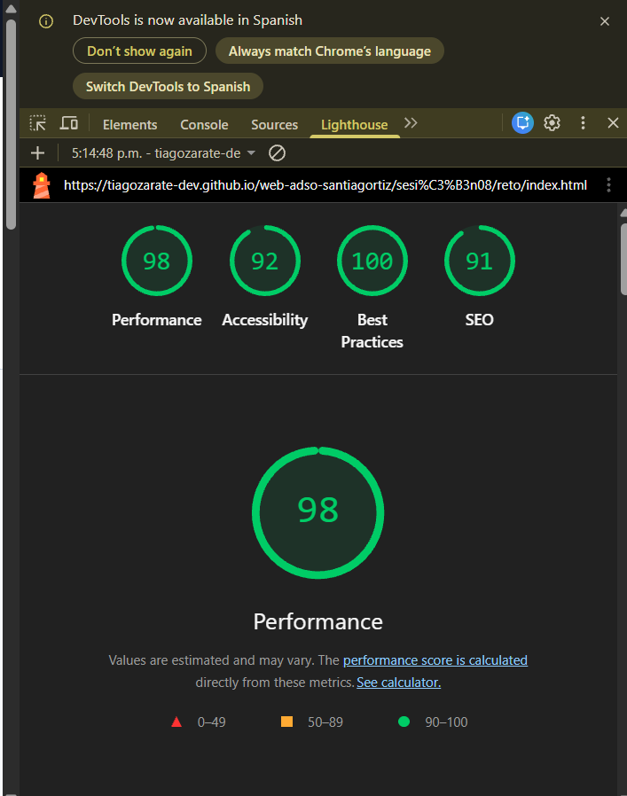
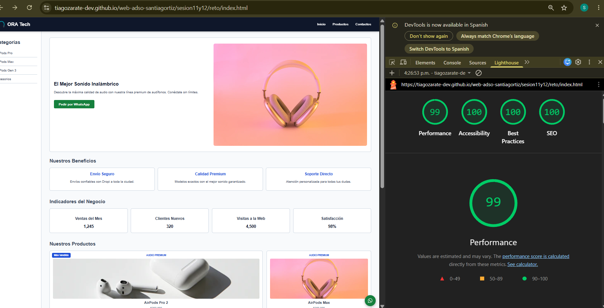

Sesión 8 — CSS Propio
391 líneas de código
Evaluación de rendimiento, código y adaptabilidad del proyecto Los recuerdos de ella entre la Sesión 8 y la Sesión 13.
Resultados obtenidos al auditar las dos versiones publicadas en GitHub Pages desde una ventana de incógnito:


Contraste técnico entre la maquetación desarrollada desde cero y la implementación apoyada en Bootstrap:
| Criterio de Evaluación | Sesión 8 (Kit / CSS Propio) | Sesión 13 (Bootstrap) |
|---|---|---|
| Puntaje de Rendimiento (Performance) | 98 / 100 | 99 / 100 |
| Accesibilidad, Buenas Prácticas y SEO | 92 / 100 / 91 | 100 / 100 / 100 |
| Líneas de código escritas | 391 líneas | 198 líneas (reducción del 49.4%) |
| Facilidad para hacerla responsive | Media: requirió escribir media queries y reglas manuales de Flexbox/Grid para cada pantalla. | Alta: el sistema de grillas de 12 columnas y las clases utilitarias resolvieron el diseño adaptable rápidamente. |
| Tiempo de desarrollo | Mayor tiempo invertido en estructurar, depurar y ajustar estilos base desde cero. | Menor tiempo: mayor velocidad al contar con componentes, márgenes y tipografía predefinidos. |
| Qué tan única se ve | 100% personalizada: cada detalle visual responde a reglas escritas a la medida. | Estandarizada por defecto, aunque permite personalizar colores y detalles con CSS propio. |
Para el desarrollo final de Los recuerdos de ella elegimos trabajar con Bootstrap como base principal, apoyándonos en una hoja de estilos propia únicamente para ajustes puntuales de identidad visual (colores de marca y detalles específicos).
Los datos de ambas sesiones respaldan esta decisión: al pasar de CSS propio a Bootstrap logramos reducir la extensión del código prácticamente a la mitad (de 391 a 198 líneas), lo que hace que el proyecto sea mucho más limpio, ordenado y fácil de mantener. Además, los indicadores de calidad en Lighthouse mejoraron hasta alcanzar un 99 en Performance y 100 perfecto en Accessibility, Best Practices y SEO, garantizando una experiencia rápida, accesible y totalmente responsive en menos tiempo de desarrollo.